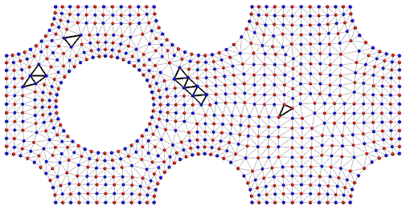
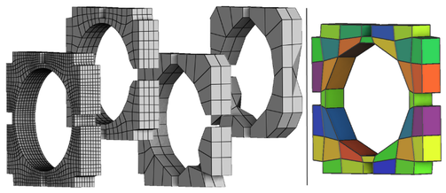
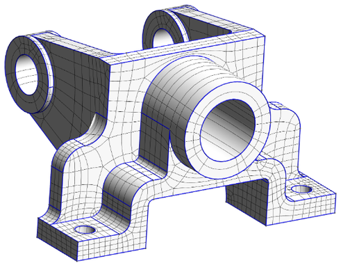
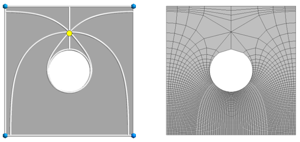
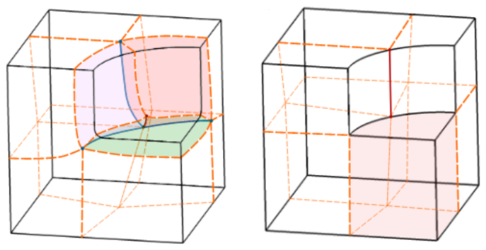
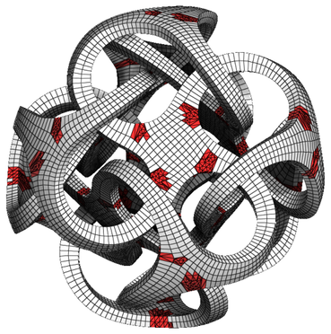
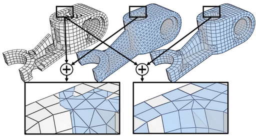
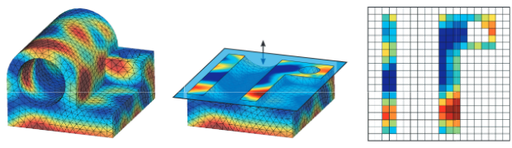
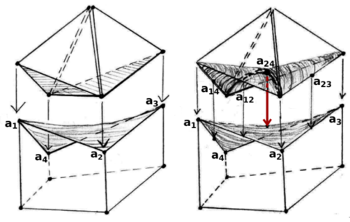

Maxence Reberol
Email: maxence (dot) reberol (at) gmail (dot) com
LinkedIn -
GitHub
About
I work at Resolve Stroke, where I lead the software team behind an ultrasound medical device for cerebral blood flow imaging.
Before joining Resolve Stroke, I spent eight years on mesh generation for numerical simulation, in academia and then in industry. The publications, talks and teaching on this page all date from that period.
At Siemens Digital Industries Software, I was a software engineer in the Star-CCM+ surface meshing team, working on the quad mesher and the surface wrapper. Before that, I was a postdoc at UCLouvain in Jean-François Remacle's Hextreme team. My work there covered all-quadrilateral surface meshing, hex-dominant volume meshing and combinatorial methods for all-hexahedral meshes, with several contributions to Gmsh.
I hold a PhD in computer science from Inria, where I worked in the Alice team under Bruno Lévy and Sylvain Lefebvre. My thesis dealt with hex-dominant mesh generation from frame fields and global parametrization, and with the influence of mesh quality on finite element results.
Publications (mesh generation, 2016 to 2023)
-
Robust Topological Construction of All-Hexahedral Boundary Layer MeshesMaxence Reberol, Kilian Verhetsel, François Henrotte, David Bommes, Jean-François RemacleACM Transactions on Mathematical Software, 2023
-
Hex Me If You CanPierre-Alexandre Beaufort, Maxence Reberol, Denis Kalmykov, Heng Liu, Franck Ledoux, David BommesComputer Graphics Forum (SGP), 2022
-

-

Robust Quantization for Polycube MapsFrançois Protais, Maxence Reberol, Nicolas Ray, Etienne Corman, Franck Ledoux, Dmitry SokolovComputer-Aided Design, 2022 -

Generation of High-Order Coarse Quad Meshes on CAD Models via Integer Linear ProgrammingMattéo Couplet, Maxence Reberol, Jean-François RemacleAIAA Aviation, 2021 -
Quasi-structured quadrilateral meshing in Gmsh - a robust pipeline for complex CAD modelsMaxence Reberol, Christos Georgiadis, Jean-François RemaclearXiv preprint, 2021Available in Gmsh 4.8.1+ (open-source)
-

Quad layouts with high valence singularities for flexible quad meshingJovana Jezdimirović, Alexandre Chemin, Maxence Reberol, François Henrotte, Jean-François Remacle29th International Meshing Roundtable, 2021 -

Multiple approaches to frame field correction for CAD modelsMaxence Reberol, Alexandre Chemin, Jean-François Remacle28th International Meshing Roundtable, 2019 -

Maillages hex-dominants : génération, simulation et évaluationMaxence ReberolPhD thesis, 2018Supervisors: Bruno Lévy, Sylvain Lefebvre -

-

-

Low-order continuous finite element spaces on hybrid non-conforming hexahedral-tetrahedral meshesMaxence Reberol, Bruno LévyResearch report, 2016
{kind=link}
{kind=link}
{kind=link}
Talks
- Robust Topological Construction of All-Hexahedral Boundary Layer Meshes, FRAMES 2021, Online, 2021. (Slides)
- Hex-dominant meshing with all-hexahedral boundary layer, USNCCM16, Online, 2021.
- Quasi-structured quadrilateral meshing of complex CAD models in Gmsh, FRAMES 2020, Online, 2020. (Video)
- 3D frame fields and block decomposition of CAD models, seminar at the Computer Graphics Group, Unibe, Bern (Switzerland), 2020. (Slides)
- Multiple approaches to frame field correction for CAD models, 28th IMR, Buffalo (US), 2019. (Slides)
- Towards automatic block decomposition of 3D domains by exploiting frame fields, IGA 2019, Munich (Germany), 2019. (Slides)
- Towards automatic block decomposition of general 3D domains by correcting frame fields, USNCCM15, Austin (US), 2019. (Slides)
- Limitations of boundary-aligned frame fields for full hexahedral meshing, FRAMES 2019, Louvain-la-Neuve (Belgium), 2019. (Slides)
- Maillages hex-dominants : génération, simulation et évaluation, PhD defense, Nancy (France), 2018. (Slides)
- Efficient computation of distances between FEM solutions defined on different 3D meshes, CHANGE workshop, Leysin (Switzerland), 2018. (Slides)
- Hex-dominant meshes and the finite element method, seminar at UCLouvain, Louvain-la-Neuve (Belgium), 2017.
- Finite Element method on hybrid hexahedral-tetrahedral meshes, seminar at ENSG Nancy (France), 2016.
{kind=link}
Teaching
- 2018-2021: Tutorials in mathematical analysis (LEPL1102), UCLouvain
- 2017: Course on implementing the finite element method in C++, and supervision of student projects, ENSG
- 2017: Tutorials on numerical analysis, ENSG
- 2016, 2017: Tutorials on programming and algorithms, ENSG
Education
- PhD in Computer Science, Inria Grand-Est / Université de Lorraine, 2015 - 2018
- M.Sc. in Civil engineering, École Centrale Paris, 2013 - 2014
- Diplôme d'Ingénieur, Supélec, 2011 - 2014